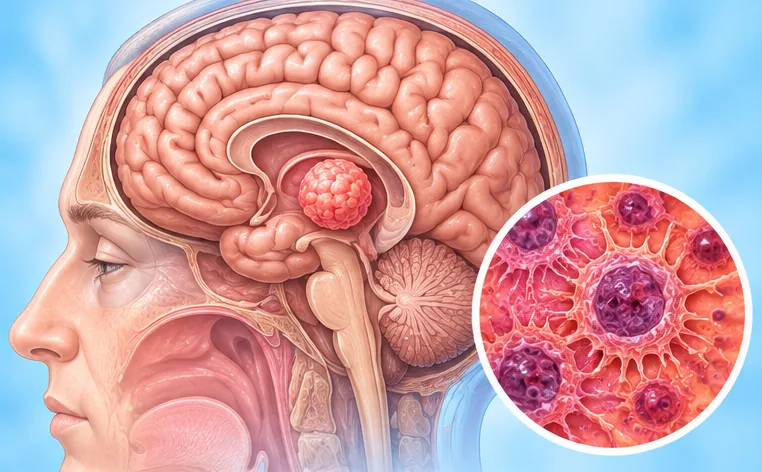

Haemangioblastoma
A slow-growing tumour made of blood vessels, usually in the brain, spine or back of the eye
What it is
A haemangioblastoma is a tumour of blood vessels. It usually grows slowly and is often not cancer, but it can press on nearby nerves or the brain.
- Brain, spine or eye
- Mostly adults
- Headache, unsteady walk
- Which doctor
- Brain and nerve doctor (neurologist), brain surgeon
- Common in
- Adults; some people have it with an inherited condition
- Contagious
- No
- Course
- Often grows slowly over time; your doctor can explain the options
Common signs

Unsteady when walkingUnsteady gait 
Blurry visionBlurred vision
More signs
- Headache, sometimes with feeling sick or vomiting
- Dizziness or trouble with balance
- Numbness or weakness in the arms or legs if the spine is affected
Why it happens

The cause is not fully knownIdiopathic
Other causes
- Some people have an inherited condition that makes these tumours more likely
- A change in a gene that controls how blood vessels grow
- Having close family members with the same condition
See a doctor first if
- Sudden severe headache, repeated vomiting or confusion: call 999
- Sudden weakness of the face, arm or leg, or trouble speaking: call 999
- A fit (seizure) or fainting
- Headaches that keep coming back or slowly get worse
- New numbness, clumsiness or loss of balance
- Changes in vision
If any apply, please see a doctor before a session.
This page is general information. Please keep taking your normal medicine and keep seeing your doctor.
Keep taking your normal medicine and keep seeing your doctor. Our session is a gentle support and does not replace medical care.
Looking after yourself

See your doctor for check-upsRegular medical follow-up
More ways to look after yourself
- Never stop treatment or medicine on your own; ask your doctor first
- Move carefully to avoid falls if your balance is poor
- Ask your doctor whether family members should be checked
- Talk to someone you trust about how you feel
Tell your therapist
- Cancer or cancer treatment
- Dizzy when turning the head
- Numb or tingling arm
- Numb or tingling leg or foot
- Weak leg or foot
Your therapist will go through this with you before starting.
Questions and answers
What is Haemangioblastoma?
A slow-growing tumour made of blood vessels, usually in the brain, spine or back of the eye. A haemangioblastoma is a tumour of blood vessels. It usually grows slowly and is often not cancer, but it can press on nearby nerves or the brain.
What are the common signs of Haemangioblastoma?
Unsteady when walking · Blurry vision
Why does Haemangioblastoma happen?
The cause is not fully known
How can I look after myself with Haemangioblastoma?
See your doctor for check-ups
Can an AI Body Master session help with Haemangioblastoma?
A session is gentle, needle-free meridian support for your wellbeing. It does not treat or cure Haemangioblastoma and never replaces your medicine or your doctor. Tell your therapist about it before the session starts.
Related conditions
References: General information based on public health sources such as Mayo Clinic, NHS, Cleveland Clinic and NCBI StatPearls.
Page updated: 2026-11-01